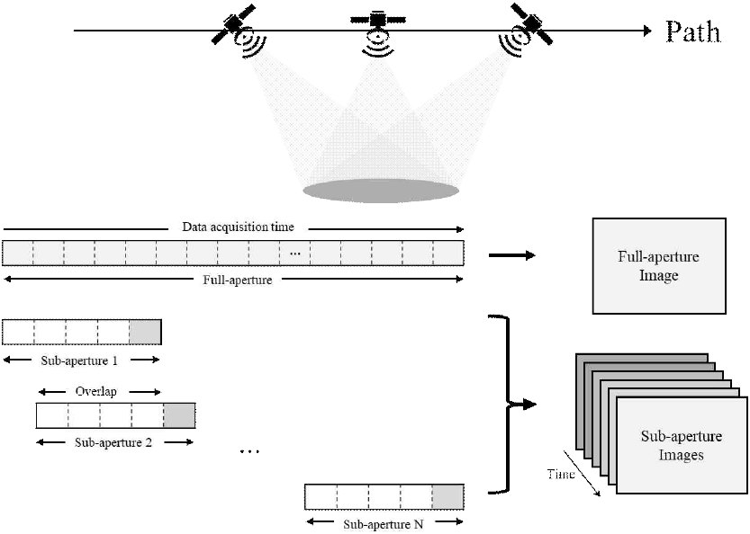

연구실적 · 국내전문학술지
위상 시계열 마이크로 도플러 분석을 이용한 Dwell 모드 위성 SAR 기반 교량 고유진동수 추정
Estimating Bridge Natural Frequencies Using Phase Time-Series Micro-Doppler Analysis with Dwell-Mode Satellite SAR

초록
본 연구에서는 ICEYE 위성의 Dwell 모드 SAR(synthetic aperture radar) 데이터를 활용하여 교량 구조물의 고유진동수 추정 가능성을 실증하였다. 교량 진동에 의해 유도된 마이크로 도플러(micro-Doppler) 성분을 분석하기 위해, 하위 개구(sub-aperture) 기반 영상화 기법을 적용하여 시간 분해능을 갖는 복소 영상 시계열을 구성하였다. 또한 하위 개구 영상 간 정합 및 다중 산란체의 위상 신호에서 저차 다항식 모델 기반의 추세 제거를 수행하여 잔여 오차를 보정함으로써 진동 분석의 정밀도를 확보하였다. 분석 결과, 도출된 고유진동수는 가속도계 기반의 계측치와 높은 일치성을 나타냈다. 본 연구는 위성 SAR 기반의 원격 탐사 기법이 대형 구조물의 건전성 모니터링(SHM, structural health monitoring)을 위한 유효한 도구로 활용될 수 있음을 시사한다.
인용
유용선 Yong-Sun Yoo, 채수빈 Subin Chae, 임태정 Taejeong Lim, 이우경 Woo-Kyung Lee, “위상 시계열 마이크로 도플러 분석을 이용한 Dwell 모드 위성 SAR 기반 교량 고유진동수 추정”, 한국전자파학회논문지, 제37권 3호, 2026년
BibTeX
@article{Yoo_2026,
title={Estimating Bridge Natural Frequencies Using Phase Time-Series Micro-Doppler Analysis with Dwell-Mode Satellite SAR},
volume={37},
ISSN={2288-226X},
url={http://dx.doi.org/10.5515/kjkiees.2026.37.3.241},
DOI={10.5515/kjkiees.2026.37.3.241},
number={3},
journal={The Journal of Korean Institute of Electromagnetic Engineering and Science},
publisher={Korean Institute of Electromagnetic Engineering and Science},
author={Yoo, Yong-Sun and Chae, Subin and Lim, Taejeong and Lee, Woo-Kyung},
year={2026},
month=Mar,
pages={241–246}
}